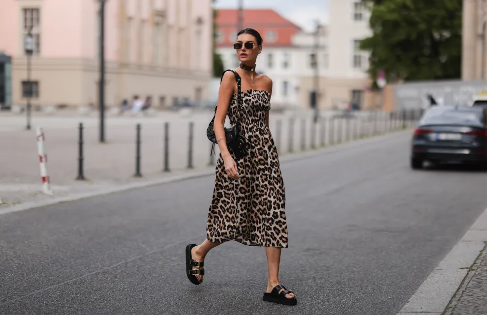
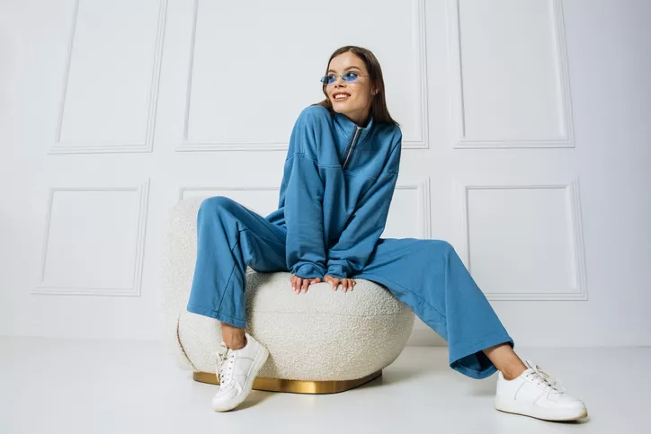

MISIÓN
Nuestra misión es ofrecer a la mujer moderna y empoderada prendas de alta calidad, sofisticadas y cómodas, que reflejen su personalidad y estilo único. Nos comprometemos a brindar experiencias de compra excepcionales, fusionando tendencias globales con la autenticidad local, mientras promovemos la sostenibilidad y la responsabilidad social en cada paso de nuestra cadena de valor. Queremos que cada mujer se sienta segura, elegante y auténtica en cada prenda que elija de nuestra colección.

VISIÓN
Ser una marca líder en la moda femenina, reconocida por su innovación, sostenibilidad y compromiso con la belleza natural de cada mujer. Buscamos expandir nuestra presencia global, llevando nuestra visión de moda accesible, inclusiva y responsable a cada rincón del mundo, creando una comunidad de mujeres que no solo se visten, sino que se expresan a través de sus elecciones de estilo. Nuestra visión es transformar la industria de la moda, haciendo que la belleza y el buen gusto se encuentren con la ética y el respeto por el medio ambiente.